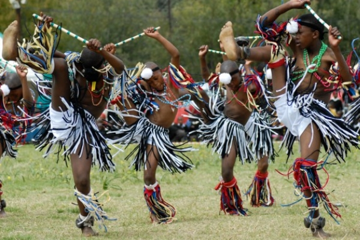
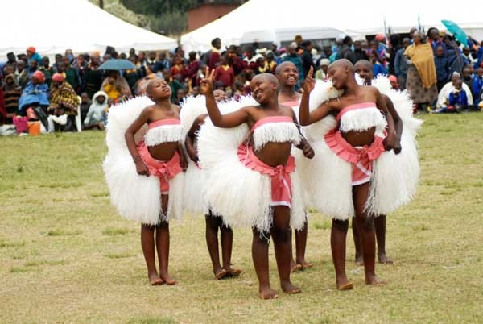
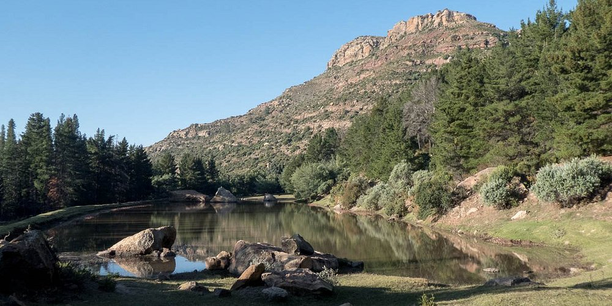
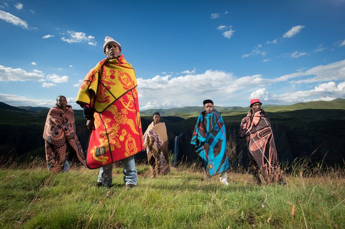
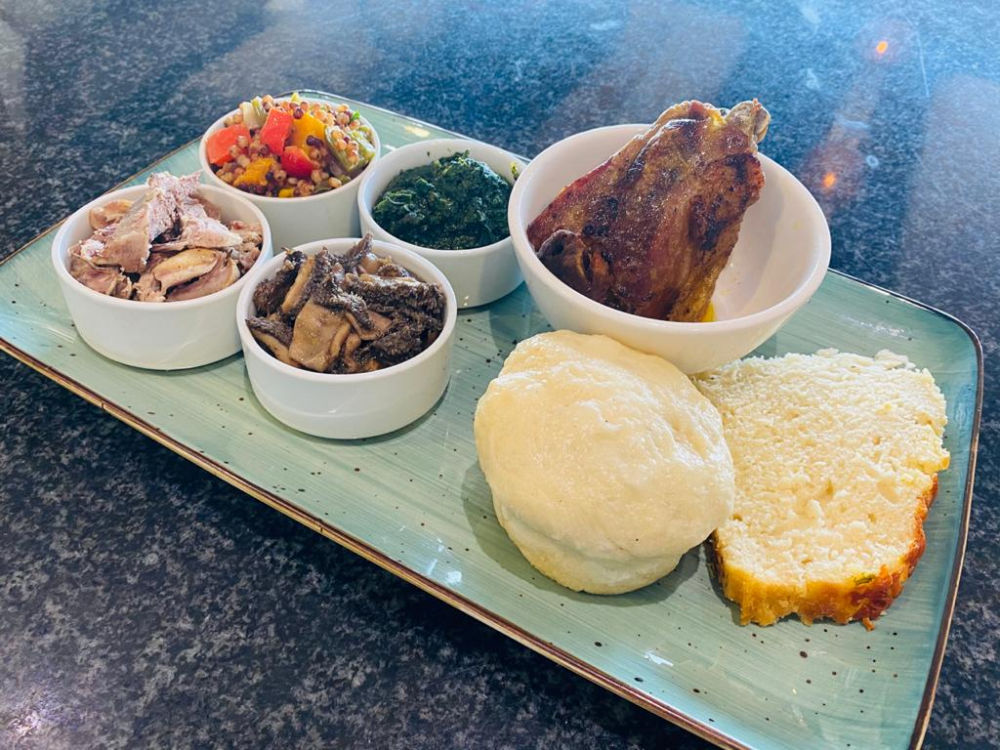

The Morija Cultural Festival is Lesotho's premier celebration of Basotho heritage, bringing together locals and international visitors for three days of traditional music, dance, storytelling, arts,Poems and the history of Basotho Nation.

The festival proudly features some of Lesotho's most iconic traditional dances:
These performances celebrate Basotho heritage and are a highlight for tourists.

Three days of Sesotho music, poetry, traditional dance, crafts and food at the historic Morija Museum grounds. Open to both local and international visitors.

23 – 25 May 2026
Morija, Lesotho (Maseru district, approx. 40 km from the capital)

Enjoy vibrant traditional performances showcasing Basotho heritage and colorful attire.

Sample delicious local Sesotho dishes prepared by community vendors. Family-friendly – free entry for children under 12.
Festival countdown: May 23–25, 2026